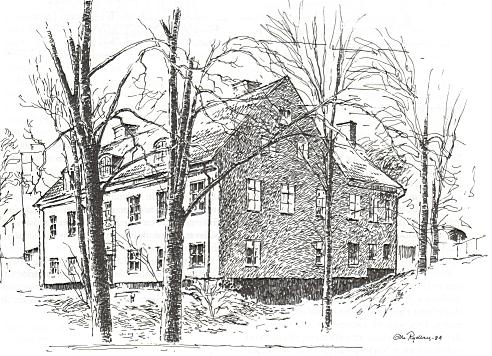

|
Slutvarvat Ur Se på Söder, Olle Rydberg, 1986 
Efter några år lämnades varvet till uthyrning under ledning av skeppsbyggmästare, till vilka man i början på 1700-talet kunde räkna engelsmannen William Smith. Den epoken slutade med skeppsbyggmästaren, dansken Johannes Weilbach, som dog i kolera endast 42 år gammal 1853. Som enda minnesmärke över den gamla kyrkogården vid Johanneshov står hans grift kvar med ett gravkors av järn, ensam på den annars övergivna platsen. Stora varvet visade tidigt sin kapacitet då det 1821 byggde hjulångaren "Yngve Frej", som figurerar i C J Love Almqvists "Det går an". Båten trafikerade på sin tid traden Stockholm - Arboga. Ett nytt skede i varvets historia inleddes då William Lindberg övertog arrendet. Han anlade redan 1847 en mekanisk verkstad på Tegelvikens östra sida. Den utvidgades i rask fart för att snart övertrumfa varvet vad omsättning och antalet anställda beträffar. De gamla skroven av trä fick maka åt sig för moderna järnkonstruktioner i konkurrens med Bergsunds Mekaniska Verkstad i andra änden av Södermalm. Under Lindbergs ledning byggdes 1855 varvets första järnbåt, hjulångaren "Göta", och 1893, i ett senare skede, sjösattes dess största fartyg, 1000-tonnaren "W Lindberg". Namngivaren var då borta ur världen sedan 1877. I raden av båtar från Södra varvet känner vi igen Sveabolagets "BirgerJarl", som gick i Finlandstrafik och förr lade till vid Skeppsbron. Den fick senare en efterföljare med samma namn. Riksbekant är också Gotlandsbåten "Hansa". Båten var ökänd för sin gungande gång, en egenskap jag fick stifta bekantskap med som sexåring på mitt livs första sjöresa till Visby. Vi som är lite äldre minns det kusliga öde som drabbade fartyget under andra världskriget. Vid en rutinfärd med permittenter gick Hansa efter en explosion till botten med man och allt, undantagandes två personer. Sannolikt hade den torpederats av en ubåt. En ljusare existens har södravarvsbyggda ångaren "Mariefred" fått uppleva. Fortfarande i drift, fastän den häromåret nästan demolerades av eld, fraktar båten glada sommarturister rutten Stockholm - Mariefred. "Mariefred" är nästan den enda ångbåt som finns kvar av den vita flotta som förr trafikerade Saltsjön och Mälaren. Enligt god tradition kan man fortfarande bjuda resenären på äkta ångbåtsbiff. Södra varvet gjorde en sista insats med leverans av en färja till Lidingö Trafik AB 1907 - och drog därefter sin sista suck. Formellt existerade det ännu några år framåt, men några fler båtar blev inte byggda. Kvar från den gamla varvstiden finns invid Erstaklippan skeppsbyggmästarbostället. Boställshuset, sorn det kallas, byggdes 1748. Stadsarkitekten J E Carlberg står för ritningarna. Bland ungdomarna på Sofia ungdomsgård som nu håller till i huset finns det nog ingen som siktar på att bli skeppsbyggmästare. Varvsdöden har gått hårt över vårt land och fackmännens skara decimeras allt mer. |